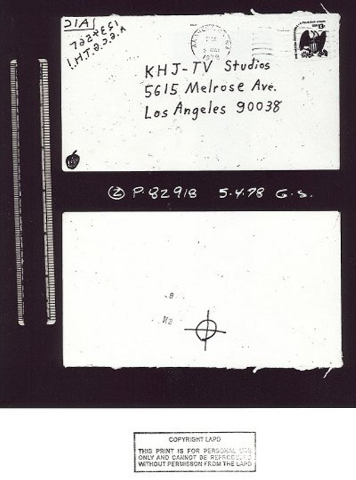
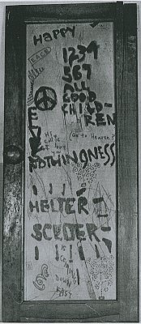
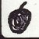

|
The Channel Nine Letter's Envelope |
|
|
|
 |
|
|
|
Envelope courtesy of Los Angeles Police Department and famed
photographer Rick Morton, who is also a reserve officer for the
LAPD. |
|
|
|
The postmark is 5/2/78
from Anaheim, CA. Bruce Davis lived in Anaheim in 1964. He then
moved to Riverside in 1966 finally leaving there in November of that
same year. |
|
|
|
Only one
stamp is used on this letter. A popular assumption made is that Zodiac
always used double postage on his letters. In keeping with Zodiac's
11/9/69 decision to "change" his ways, he also used only one stamp on the
6/26/70, 7/24/70, 10/5/70, 10/27/70, 1/29/74, 2/14/74 and 7/8/74
letters. |
|
|
|
The starting and
stopping point of the circle part of the crossed circle
symbol on back side of the envelope is at the 1 o'clock
position. (The back side of the envelope above is depicted
upside-down.) Mike Rodelli feels this is a Zodiac trait.
This is only the second time the symbol is used on an envelope!
The first time was on the 10/13/69 envelope. |
|
|
|
A city but no state is
used in the address. Zodiac also did this on the 10/27/70
and 1/29/74 envelopes and the 3/22/74 "Pines" postcard. |
|
|
|
A
Zip Code is used for the first and only time. A Zodiac
characteristic is that he would do things out of character and
only once. Another factor is that by 1978 the Post Office was
strongly urging the use of Zip Codes and saying that mail might
not get delivered without its use. What could his letters do if no
one ever received them? |
|
|
|
All
of the lettering characteristics are similar to other known Zodiac
handwriting except for the numeral "9" in the Zip Code.
(Interestingly this 9 looks like a 9 that Bruce Davis wrote on an
envelope in 1991. Of further interest is that Manson and Davis
felt that 9 (as in "Revolution 9") had a great
significance.) The following are some examples of these
handwriting similarities: |
|
|
|
~ |
The appearance of the
letter "M" - Most of Zodiac's M's do not have the bottom of the
mid-point contacting the base. However, there
are at least two occurrences of this feature: The 10/27/70 and
5/8/74 letters. |
| |
|
|
~ |
The "H" has
a slightly shorter appearing right vertical line, similar to many
of Zodiac's H's. |
| |
|
|
~ |
The "T" has
a fairly small horizontal bar and one "T" is similar to
"The boy . . ." in the letter of 7/31/69 to the San
Francisco Chronicle. |
| |
|
|
~ |
The "U" does
not have a vertical stem which is like the U's in the 7/8/74
letter and others. |
| |
|
|
~ |
At least two of the
"O"s loop together at the 12 o'clock position as in some
other known Zodiac letters. |
| |
|
|
~ |
The two "5"s
have long vertical bars like many that are known to have been
written by Zodiac. See the 4/30/67 Riverside envelope and in the
7/31/69 Vallejo Times-Herald letter for examples. |
| |
|
|
~ |
The checkmark
"r" - a Zodiac trait - is present. |
| |
|
|
~ |
The "3" has
a slightly larger diameter lower half-loop similar to other known
Zodiac handwriting. |
| |
|
|
~ |
The "8" is
somewhat unique with the final stroke rising and curling to the
left. See the 6/26/70 letter. |
| |
|
|
~ |
The "G" in
the "reversed code" is similar to G's used in the three
7/31/69 letters. |
| |
|
|
~ |
The "-"
(dash) is similar to the one used on the 10/27/70 envelope. |
| |
|
|
~ |
Note the "reverse 4"
has the horizontal crossbar going through the vertical
bar - rare for Zodiac. It is used one other time on a
previously unpublished, 1967 Zodiac envelope that can be
found in
The Zodiac / Manson Connection book. |
|
|
|
| The
Code |
 |
| Reversing
the code we get: "1 2 3 4 5 6 7 A. G. C. G. T. H.!" (The
"7" was not reversed.) "1, 2, 3, 4, 5, 6, 7, All
Good Children Go To Heaven" is an old British children's
rhyme (Zodiac's British connection) and the phrase is used in the
Beatles song, "You Never Give Me Your Money" from 1969's
"Abbey Road" album. On a door
at Spahn Ranch, the Manson Family, along with other drawings, had
written "1234567 ALL GOOD CHILDREN (go to heaven?)" as
pictured here and also is in Vincent Bugliosi's book, "Helter
Skelter." |
| The
rest of the rhyme goes: "A penny on the water
- Two pence on the sea.
Three pence on the railway - Out
goes she." |
| Both
Manson and Davis were to come up for parole hearings later that
year - 1978. Was this a threat against Susan Atkins? Her testimony
threatened to block those paroles. This letter and envelope were
not publicized and Charlie and Bruce were both denied their
paroles. |
|
|
|
|
The
meaning of the three letters in the return address area is unknown
at this time - unless the writer is referring to the CIA. The
Beatles wrote a song mentioning the CIA and Manson was concerned
about the CIA, even writing to someone else saying, "We
always knew you were CIA." A mirror image of the letters is
"AIC." A1C is a U.S. Air Force acronym for the rank of
Airman First Class - grade E3; two stripes. The military
connection? |
|
|
|  |
The
"apple" drawn in the bottom left hand corner may be a
symbol for Manson. It seems that inside the apple there is a
"C" but it is hard to clearly see it. The Beatles owned
Apple Records. Paul McCartney has said that he got the
idea for the Apple name and logo from a painting by
artist Ren�
Magritte that depicted a man with an apple over his
face. The name of the painting? "The Son of Man". This
is what Manson called himself because of his last name
Man son, or Son (of) Man. Some in the Family
called him this. This would go along with Manson
claiming to be Jesus because Jesus was also called the
Son of Man. |
|
Click for
close-up |
|
|
|
|
Back to
Updates page |
|
|
|
In
writing the city name, "Angeles" is higher than
"Los." This same pattern is found on Zodiac's 1/29/74
envelope where the "Fran" is raised above the
"San." This feature is rare but it is used in other
places. The upper case "A" has an elongated left
vertical bar - it is longer than the other one. This trait is
found in a great many A's that Zodiac has written. For examples
see all three 7/31/69 letters and the 11/9/69, 12/20/69, 4/20/70,
10/27/70, and 5/8/74 letters, among others. |
|
|
|
In an e-mail, Mark
Turner, Webmaster of CharlieManson.com, had the following
comments about the Channel 9 envelope: |
|
|
>Right off, if you just flip each
individual letter, it becomes "C I A"
>which is quite recognizable.
>
>I agree that looks like an apple in the corner. But it
also appears to
>have a letter written in the middle of the apple. Looks
like a "C" to me.
>The Beatles company was Apple Corps, so perhaps the
"C" is in reference to
>"Corps."
>
>Flipping the entire top left thing looks like "AIC"
as you said. Again,
>the "A" and "C" could reference
"Apple Corps" and the "I" is simply a
>dividing line.
>
>There's another little thing worth thinking about. When
flipped, the "AIC"
>has an "L" shape drawn around it. On first
thought, it could simply be a
>box to separate "AIC" from the "1234..."
thing. But, the author didn't box
>all four sides, so perhaps it is actually an "L"
which makes it "LAIC".
>"LA" could be "Los Angeles" but that
leaves "IC" as a mystery.
>
>Since the person goofed with the non-backwards "7"
then perhaps they goofed
>with the "LAIC" and it was intended to be "LIAC"
which could mean "Lives In
>Anaheim, California" (or "Lived" or
"Live"). Doubtful, but who knows?
>
>"Laic" is an english word for "layperson"
(and a couple of other similar
>things).
>
>Flipping it becomes "Cail" which could be a person's
name (I found examples
>of first and last names).
>
>A rearrangement becomes "Cali" which returns various
results on google but
>is also an abbreviation of "California."
>
>Mark |
|
|
|
|
|
Back
Contents
Top
of page |
|
|
|
|